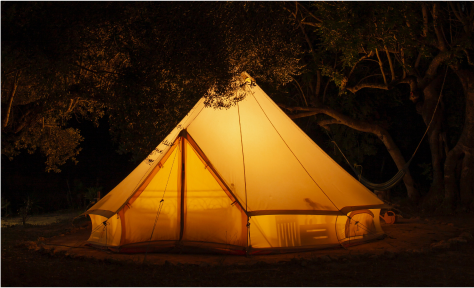

Els Millors Destins per Gaudir del Glamping amb Estil
El glamping ha esdevingut una de les maneres més populars de connectar amb la natura sense renunciar a les comoditats modernes. Però no tots els destins de glamping són iguals; hi ha llocs que porten aquesta experiència al següent nivell, oferint una fusió perfecta entre luxe i natura. Aquí et presentem alguns dels millors destins per gaudir del glamping amb estil.
- El Montseny, Catalunya: Conegut per les seves muntanyes verdes i boscos frondosos, el Montseny ofereix una experiència de glamping incomparable. Envoltats de natura exuberant, les tendes de glamping en aquesta zona estan equipades amb totes les comoditats, des de llits king-size fins a banyeres exteriors amb vistes espectaculars. És el lloc perfecte per desconnectar i gaudir de la tranquil·litat.
- El Delta de l’Ebre:Aquest paradís natural és ideal per als amants de la biodiversitat. Aquí, el glamping permet gaudir de la rica fauna i flora del Delta sense perdre confort. Pots passar el dia explorant els canals amb bicicleta o en caiac, i tornar a la teva tenda de glamping per gaudir d'un sopar preparat amb productes locals mentre el sol es pon sobre les aigües tranquil·les.
- Els Pirineus:Si ets un amant de les muntanyes, els Pirineus són una destinació imprescindible. Aquí trobaràs opcions de glamping que combinen la proximitat a rutes de senderisme impressionants amb allotjaments de luxe. Després d’un dia d’aventures, podràs relaxar-te en una tenda equipada amb totes les comoditats modernes, incloent calefacció per les nits fredes de muntanya.
- La Costa Brava: Per aquells que volen gaudir del mar, la Costa Brava ofereix una experiència de glamping única. Amb tendes situades a pocs passos de platges de sorra fina, podràs gaudir d'unes vacances al costat del mar amb tot el luxe d’un hotel de cinc estrelles. Des de veure la sortida del sol des de la teva tenda fins a gaudir de menjars gourmet preparats amb ingredients locals, el glamping a la Costa Brava és una experiència inoblidable.
El glamping és molt més que una simple tendència; és una nova manera de viatjar que combina l'amor per la natura amb les comoditats de la vida moderna. Si busques una experiència de vacances que ofereixi el millor dels dos mons, aquests destins de glamping amb estil són l'opció perfecta.